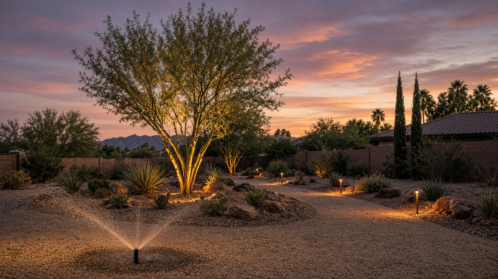
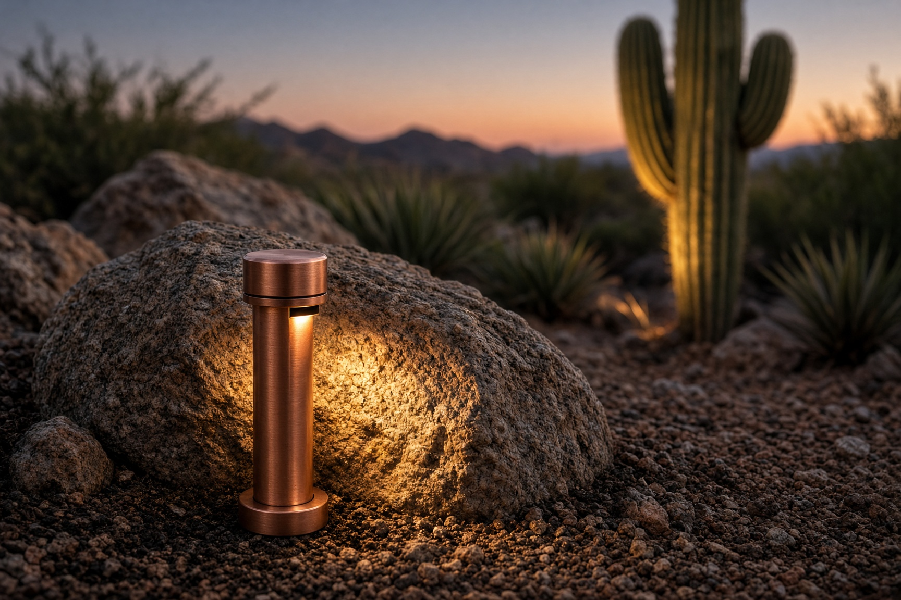
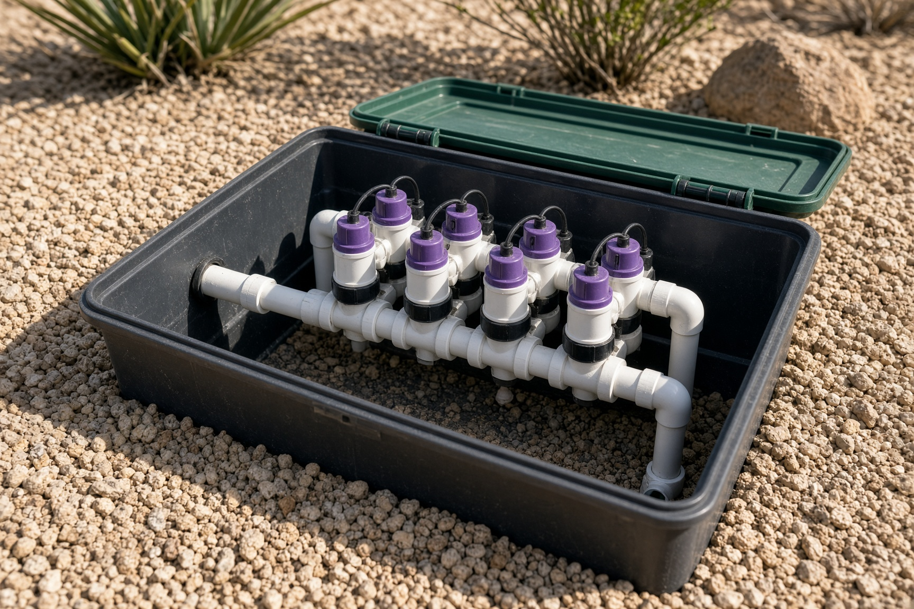
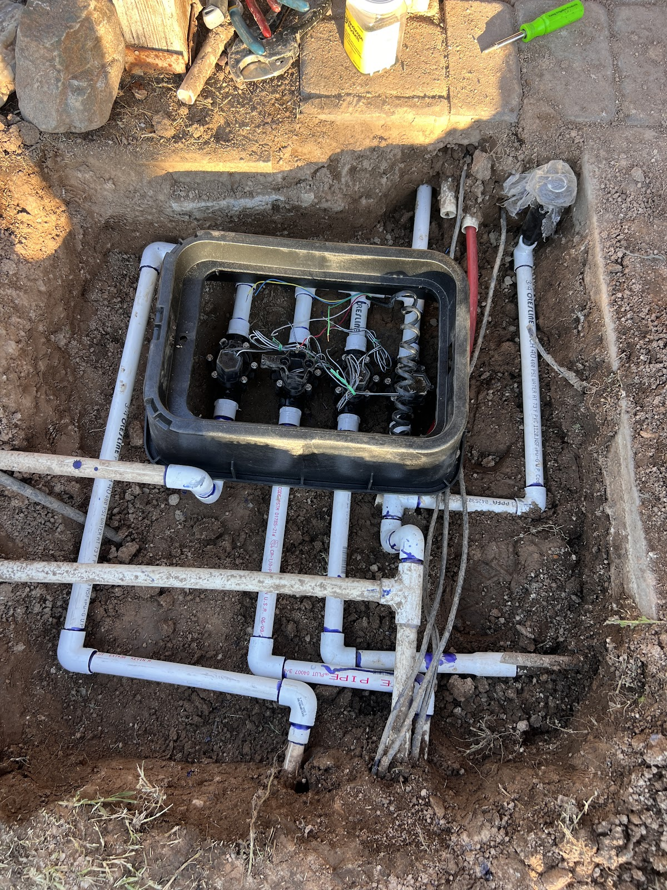
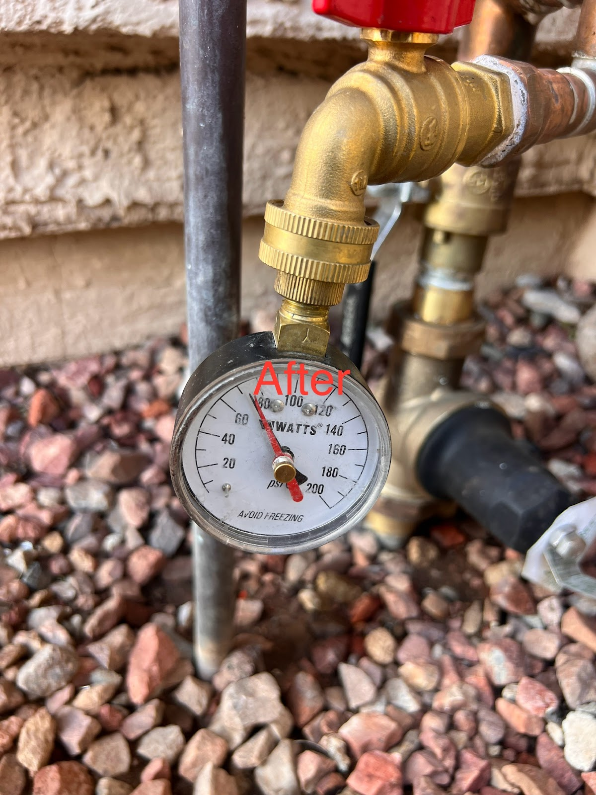

The wet sidewalk at 6 a.m. is a broken head, not a mystery. Lightning is a North Phoenix repair shop for irrigation and landscape lighting — not a turf company wearing a sprinkler hat.
5.0 / 18 Google reviews
A geyser in the parkway at dawn. A zone that never hisses. A controller with a blank face after the storm. That is a repair call.
Phoenix water is a clock problem as much as a pipe problem. We set the days the city allows and the minutes the plants actually need.
Path lights that went dark after monsoon. A transformer humming in the side yard. Uplights aimed at nothing. We restore the night view.




Controller, valve, head. We do not guess from the street. The box gets opened.
New solenoid, new nozzle, new lamp. Then we run the zone so you see it before we leave.
Phoenix watering days change. We set the controller for the season you are in, not last April.
5.0 from 18 Google reviews. 9509 N 2nd St, Phoenix 85020.
Lightning Sprinkler and Lighting Repair · (602) 814-7774 · 9509 N 2nd St, Phoenix, AZ 85020